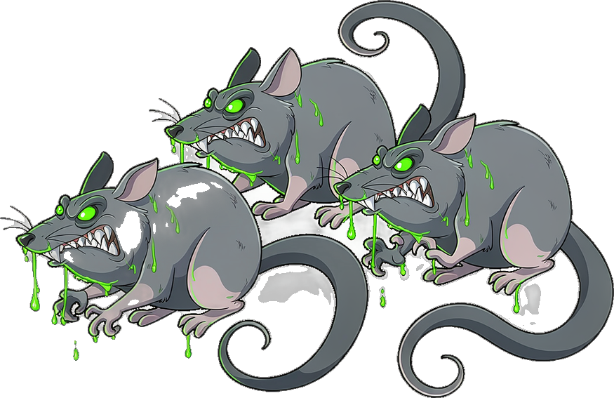

意图 · 攻击 4

35 / 50
腐蚀鼠群

75 / 75
掘者
现状：伤害数字 0.9s 就淡出消失，经常没看清就没了。三个候选节奏（同一次砸下的 观感差异主要在「停多久、飘多快」），点按钮各砸一发对比；「连发对比」把三种 依次砸在同一只鼠群身上。

| 当前 0.9s | 砸下立刻上飘淡出 —— 快，但经常没看清数字 |
| 方案 A 1.4s | 曲线不变、整体放慢：上飘更慢、淡出更晚，节奏最「顺」 |
| 方案 B 1.8s | 砸下后原地停 ~0.6s（数字完全清晰可读），再缓慢上飘淡出 —— 信息最清楚，但连击时旧数字会多堆一会儿 |
| 改哪 | art.css 的 .dmg-float 动画时长（+ 方案 B 的 dmg-rise-b 关键帧）；render.js 里 remove 的 setTimeout 同步改（900 → 对应值） |
| 不动 | 类名 / 文本格式 / 挂载位置（探针绑死）；力量飘字（.str-float）不在本次范围 |
| 连击堆积 | 方案 B 连击时同屏数字最多（3~4 个并存）——预览里连点感受一下 |
| 测试 | 探针：飘字存活时长 ≥ 选定值 − 50ms；类名 / 文本格式断言不动 |